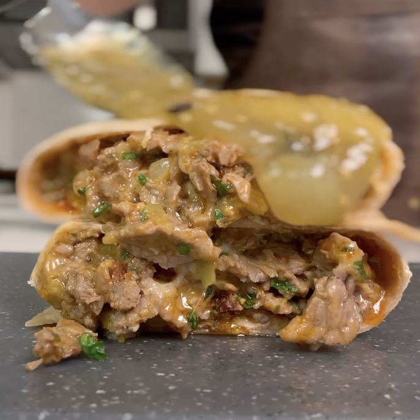

Burrito de bistec jacked
Ingredientes:
*5 porciones
- 21 oz de solomillo de la parte inferior (en rodajas finas)
- 100 g de cheddar reducido en grasa
- 100 g de mozzarella reducida en grasa
- ½ taza de chiles picados
- 5 rebanadas de tocino central
- 5 wraps de tortilla Mission Carb Balance
- 1 Cebolla Blanca
- Cilantro
Instrucciones:
- Pica la cebolla, y el cilantro
- Cocina el tocino a 400° F por 30 mins
- Sazona la carne al gusto y cocina a fuego alto por 2 mins cada lado
- Corta la carne y añádela a un bowl, así como los dos quesos (mozzarella y cheddar), chiles, el
tocino (cortado en trocitos). Mezcla bien
- Enrolla la mezcla en las 5 tortillas, y cuando quieras comer una, solo pon a tostar el burrito